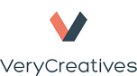

A Rails Girls hullám elérte Budapestet! Az egynapos workshop-on a Ruby on Rails varázslatos világába merülünk bele.
A Rails Girls egy nemzetközi rendezvénysorozat, amely lányokat és nőket vezet be a webfejlesztés világába. A résztvevők kellemes légkörben, interaktív előadások, programozási feladatok és szakmabeli coach-ok segítségével ismerkednek meg a programozás alapjaival.
A jelentkezés lezárult. A kiválasztott jelentkezőket március 13-ig értesítjük, hogy részt vehetnek az eseményen és megkapják a részvételhez szükséges további információkat.
Megtanulsz webes alkalmazásokat tervezni és írni szakértők segítségével.
Hozz magaddal saját laptopot, kíváncsiságot és jókedvet! :)
Segítenél? Ha szeretnél coach lenni vagy kérdésed van, írj nekünk.
| 9:00 - 10:00 |
Regisztráció és kávéHa otthon még nem installáltad a Ruby on Rails-t, reggel még megteheted. |
|---|---|
| 10:00 - 10:30 |
MegnyitóMegtudod hogyan alakul a nap, illetve partnereink üdvözölnek mindenkit. |
| 10:30 - 11:00 |
UX workshopWebes alkalmazásod megtervezése. |
| 11:00 - 11:30 |
Programozzunk! - Tryruby.orgBevezetés a programozásba |
| 11:30 - 13:00 |
WORKSHOPBelevágunk az első webes alkalmazásod elkészítésébe. |
| 13:00 - 14:00 | Ebéd |
| 14.00- 14:30 |
Bentobox - Webes applikációk megértéseÖsszefoglaljuk mi történt eddig és mindez hogyan függenek össze. |
| 14:30 - 18:00 |
WORKSHOPA korábban elkezdett alkalmazásod továbbfejlesztése, befejezése. |
| 18:00 - 18:15 |
A nap lezárása |
Mennyibe kerül a workshop-on való részvétel? Semmibe, a részvétel ingyenes.
Kiknek szól a Rails Girls? Nőknek minden korosztályból, akik alapszintű számítógépes ismerettel rendelkeznek. Azonban fontos, hogy laptopot hozz magaddal.
Mi a workshop nyelve? Az első budapesti Rails Girls-t magyarul tartjuk, hogy kényelmesebb legyen eligazodni a webfejlesztés világában. További eseményeket lehet, hogy angolul is fogunk tartani.
Férfiak is jelentkezhetnek? Igen, de egy érdeklődő hölgy ismerős társaságában vehetnek részt a Rails Girls Budapesten. Amennyiben túljelentkezés van, a lányok élveznek előnyt.
Tudok programozni - Hogyan segíthetek? Programozási ismerettel rendelkező coach-okat keresünk, mindig jól jön a segítség. Egy kb. 2 órás coach találkozót fogunk tartani a workshop előtti napokban, ahol közösen átnézzük a programot. Ha segíteni szeretnél írj nekünk
A jelentkezés lezárult. A jelentkezőket március 13-ig értesítjük, hogy részt vehetnek-e az eseményen.
Résztvevők értesítése: március 13.
A Rails Girls Budapest nagyszerű partnereink segítségével kerül megrendezésre.
Szeretnél segíteni? Támogatókat és szponzorokat keresünk non-profit eseményünkre! Írj nekünk!
A Nők a Tudományban Egyesület országos hálózat. Tagjai kutatók, egyetemi oktatók, mérnökök a tudomány és innováció minden területéről. Közös elkötelezettséggel képviseli a nemek közötti esélyegyenlőség ügyét a tudomány és kutatás területén.
A LOFFICE a kreatív- és az üzleti szféra metszéspontján elhelyezkedő olyan újgenerációs iroda, ahol adottak a munka, a kapcsolatépítés és a kikapcsolódás feltételei, ahol mindenki megtalálja a tevékenységéhez leginkább illő teret.
A DigitalNatives az egyik legnagyobb agilis Ruby on Rails fejlesztő csapat Európában és jelentős tapasztalattal rendelkeznek innovatív és egyedi fejlesztések megvalósításában.
A Schönherz fő profilja olyan, egyetem és főiskola mellett végezhető munkák biztosítása, amelyek nemcsak az anyagi problémáidat oldják meg, hanem szakmai fejlődési lehetőséget is biztosítanak számodra, s ezzel megalapozhatják a jövődet, segítenek karriered építésében. A szakmai diákmunkalehetőségek mellett természetesen hagyományos diákmunkákkal is foglalkozunk, de elsődleges célunk az, hogy már a tanulmányaid során hasznosíthasd elméleti tudásodat, ami később segíthet az elhelyezkedésedben.
Az InVendor egy független magyar tanácsadó cég, a vállalatfelvásárlások, az M&A és a startup tőkebevonási tranzakciók szakértője.
A MAVE, azaz a Magyar Villamosmérnök- és Informatikuss-hallgatók Egyesülete azzal a céllal alakult, hogy a mérnökhallgatók ismereteit bővítse, látókörét szélesítse.
 A VeryCreatives 2012-ben alakult Ruby fejlesztőcég, mely három kontinensen szolgálja ki megrendelőit, startupoktól kezdve a legnagyobb nemzetközi vállalatokig. A megrendelések mellett komoly hangsúlyt fektetnek a belső inkubációs programok keretein belül saját, nemzetközi piacra szánt termékfejlesztésekre.
 Az AppMaintainers Ruby on Rails alkalmazásokat tart karban és fejleszt. Mindezt Budapesten teszik, ami szerintük egy igazán remek város. Mivel imádnak tanítani is, ezért a munka mellett Rails for Business órát tartanak az egyik informatikai egyetemen.
Az AppMaintainers Ruby on Rails alkalmazásokat tart karban és fejleszt. Mindezt Budapesten teszik, ami szerintük egy igazán remek város. Mivel imádnak tanítani is, ezért a munka mellett Rails for Business órát tartanak az egyik informatikai egyetemen.
 Ackermann Mária, szervező
@Maria_Ackermann
Vitályos Brigitta, szervező & coach
Weltz Boglárka, szervező & coach
Ackermann Mária, szervező
@Maria_Ackermann
Vitályos Brigitta, szervező & coach
Weltz Boglárka, szervező & coach
 Árpasi Bence, coach
Balogh Zsófia, coach
Beöthy Miklós, coach
Biró Júlia, coach
Felhősi Nicole, coach
Györffy Attila, coach
Lukács Péter, coach
Rimay Zoé, coach
Rozner Mihály, coach
Vámosi Dániel, coach
Árpasi Bence, coach
Balogh Zsófia, coach
Beöthy Miklós, coach
Biró Júlia, coach
Felhősi Nicole, coach
Györffy Attila, coach
Lukács Péter, coach
Rimay Zoé, coach
Rozner Mihály, coach
Vámosi Dániel, coach